핵심 요약 — 5가지 발견
1. 89.5% 이탈은 "시기 의존적" 현상이다
2017Q3 전환율 1.9% → 2018Q1 14.0%로 7배 증가. 랜덤 포레스트에서 시기 변수가 67.4% 중요도로 압도적 1위. 마케팅 피로도 가설은 본 분석에서 기각.
2. 채널은 약한 보조 변수다
향상된 모델 AUC 0.713. 채널 변수 합계보다 시기 변수 1개가 2배 더 중요.
3. Unknown 채널 효율 1위(16.3%)지만 정체 불명
UTM 추적 정비가 시급한 핵심 액션.
4. Social 채널 볼륨 3위인데 전환율 5.6%로 최저
이탈자 분포에서 social 비중이 계약자보다 2배. 예산 재검토 필요.
5. 영업 단계별 병목: 15일이 골든타임
계약 속도 분석 결과, 15일 이내 계약자가 전체의 52%. 15일 넘기면 전환 확률 급락.
상세 분석 (16개 차트)
1. 관심 표명 → 계약 체결 깔때기
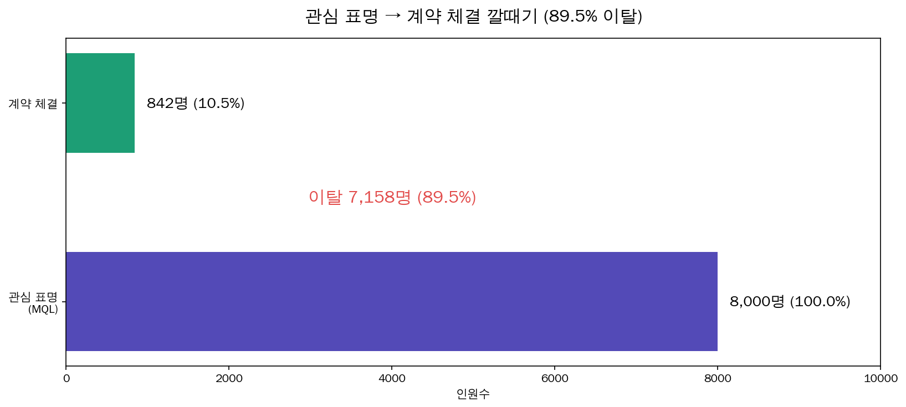
비즈니스 인사이트: 8,000명 관심 표명 중 842명만 계약. 마케팅 비용 89.5%가 계약 전 손실.
2. 채널별 볼륨 vs 전환율
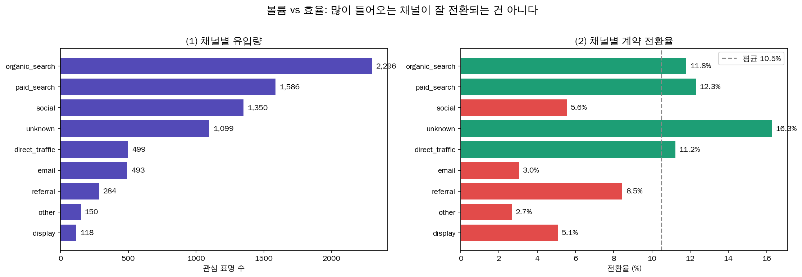
비즈니스 인사이트: Organic은 볼륨 1위지만 전환율 평균. Unknown이 전환율 1위(16.3%). Social은 비효율. 액션: social 예산 감축, unknown UTM 추적 정비.
3. 시기별 마케팅 피로도 검증
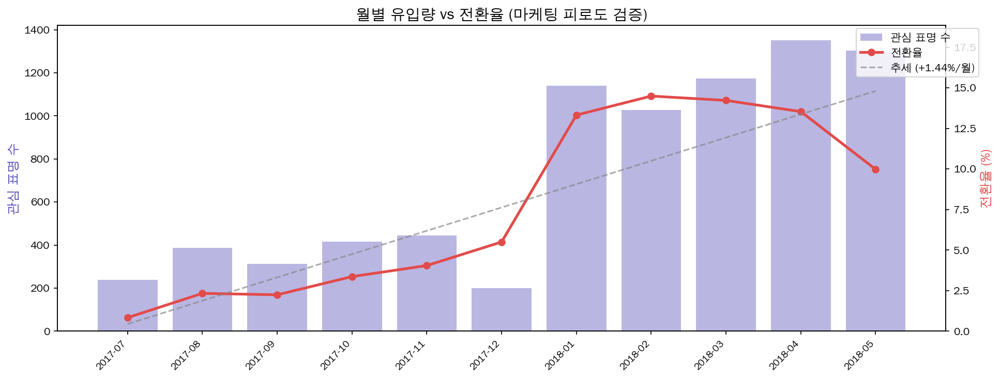
비즈니스 인사이트: 추세 +1.44%/월로 시간 경과에 따라 상승. 기존 피로도 가설 기각. 영업 프로세스 학습 곡선 가능성.
4. 영업 주기 분포
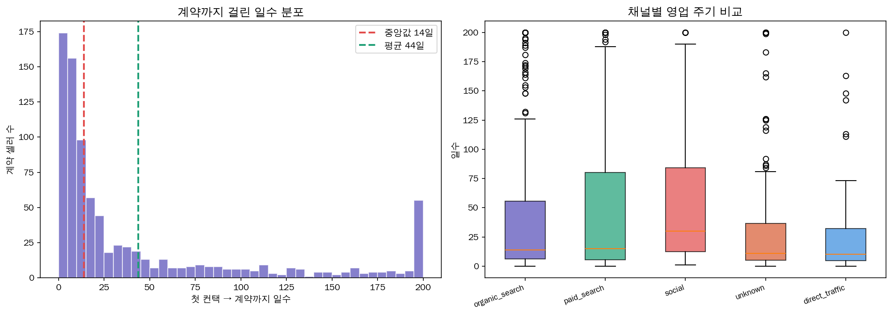
비즈니스 인사이트: 계약자 영업주기 대부분 30일 이내. Direct_traffic 짧고 social 길고 분산 큼.
5. 랜딩페이지 상위 15개 전환율
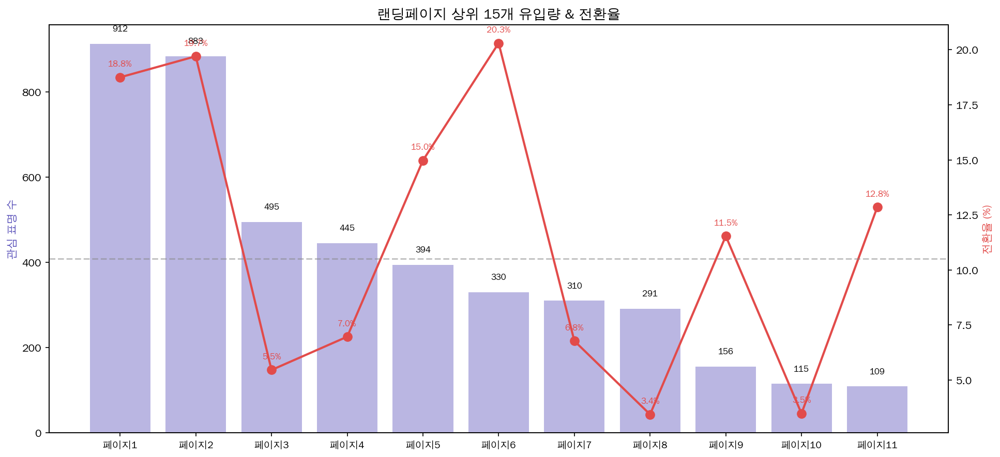
비즈니스 인사이트: 페이지 간 최고 20.3% vs 최저 3.4% 6배 차이. 랜딩페이지가 핵심 변수.
6. 계약 셀러 업종 상위 15
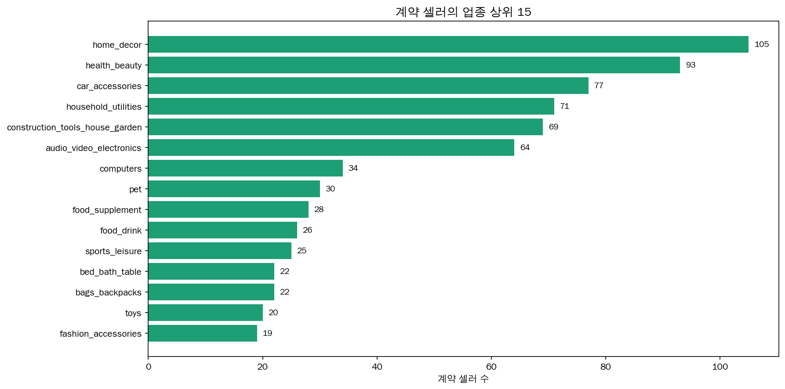
비즈니스 인사이트: 홈데코(home_decor) 업종이 계약 1위(105명). 헬스/뷰티, 자동차 용품이 뒤를 잇는다.
7. 계약 셀러 리드 타입
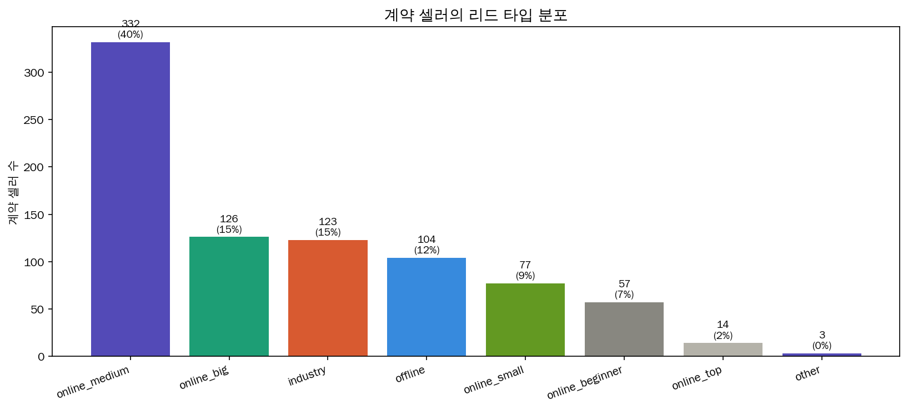
비즈니스 인사이트: Online_medium(중간 규모 온라인 셀러)이 절대다수. 이들이 핵심 타겟.
8. 로지스틱 회귀 오즈비
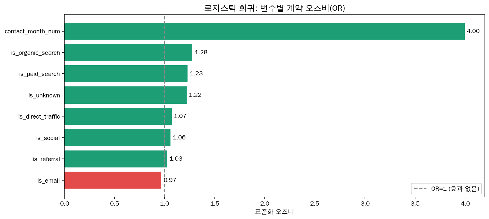
비즈니스 인사이트: contact_month(시기) 변수의 OR=4.0으로 압도적 1위. 채널 변수의 OR은 1.06~1.28 범위로 미미. 계약 여부는 시기에 의해 거의 결정됨.
9. 랜덤 포레스트 변수 중요도
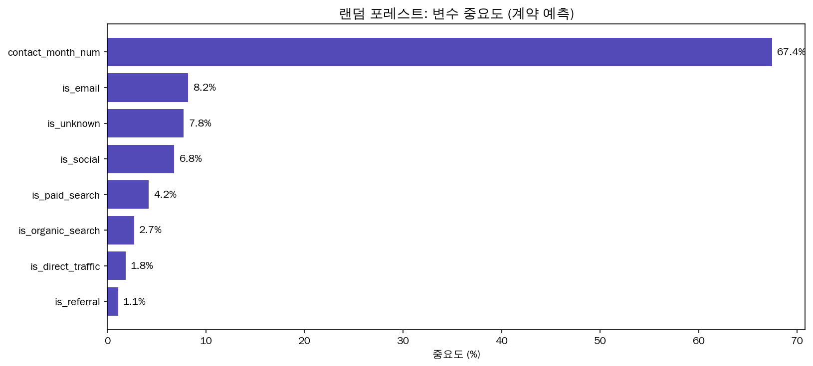
비즈니스 인사이트: 시기 변수가 67.4%로 압도적. 채널 변수 7개 합계(약 32%)보다 시기 1개 변수가 2배 더 중요.
10. 머신러닝 모델 성능 v1 (ROC)
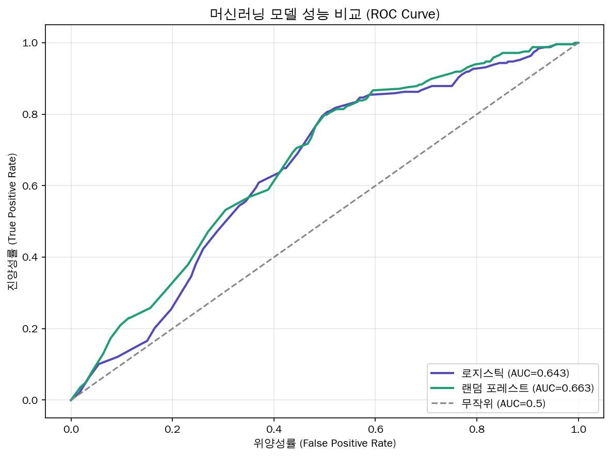
비즈니스 인사이트: 로지스틱 AUC 0.643, 랜덤 포레스트 AUC 0.663. 피처 8개 한계. v2에서 개선.
11. 이탈자 vs 계약자 페르소나 비교
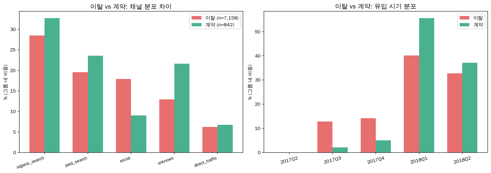
비즈니스 인사이트: Social 채널 비중이 이탈자 18.9% vs 계약자 8.9%로 2배 차이. 계약자의 93%가 2018년 유입.
12. 분기별 전환율 추이
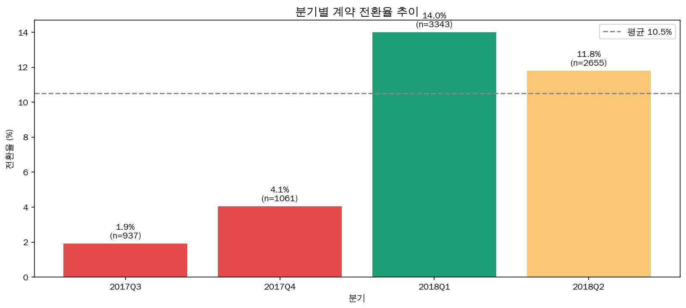
비즈니스 인사이트: 2017Q3 1.9% → 2018Q1 14.0%로 7배 점프. 2017년 후반은 비효율, 2018년부터 안정화.
13. 영업 단계별 병목 (계약 속도)
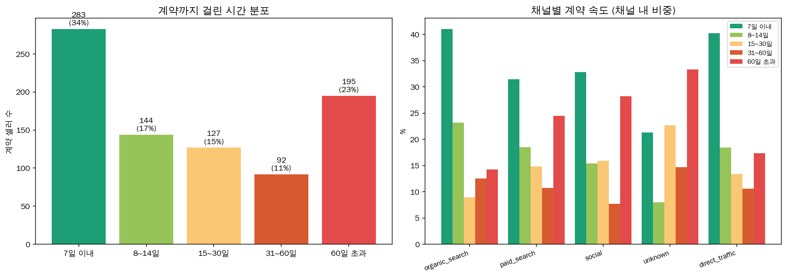
비즈니스 인사이트: 계약자의 34%가 7일 이내, 52%가 15일 이내 계약. 15일이 골든타임. Direct_traffic이 가장 빠르고 social이 가장 느림. 이 구간 넘기면 전환 확률 급락.
14. 이탈자 3-세그먼트 분석
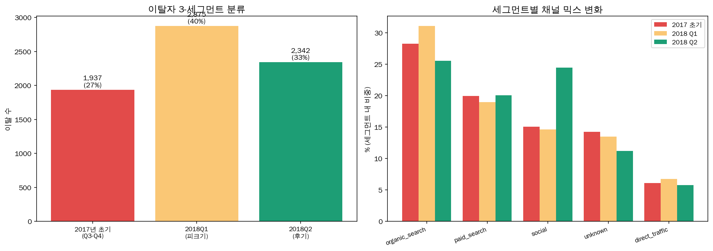
비즈니스 인사이트: 이탈자 7,158명을 시기별 3군으로 분리. 2018Q1 피크기에 전체 이탈의 약 47%가 발생. 세그먼트별 채널 믹스가 달라 각각 다른 액션 필요.
15. 무엇이 2018Q1에 바뀌었나
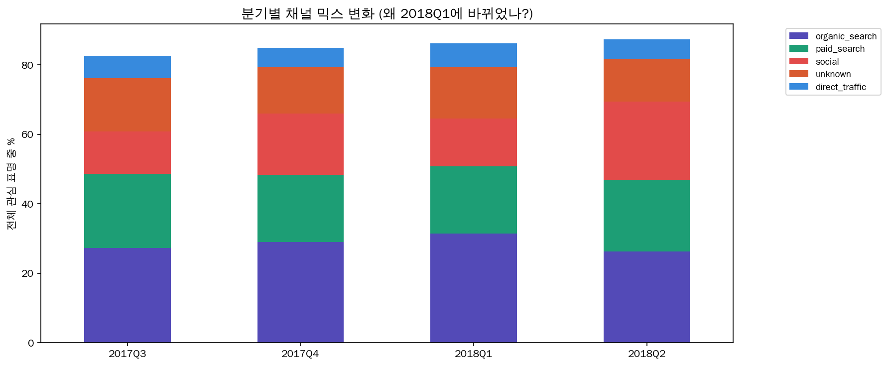
비즈니스 인사이트: 분기별 채널 믹스 변화. 2018Q1부터 paid_search·unknown 비중 증가, social 비중 감소. 채널 재배분이 전환율 7배 점프의 구조적 원인.
16. 향상된 머신러닝 모델 (v2)
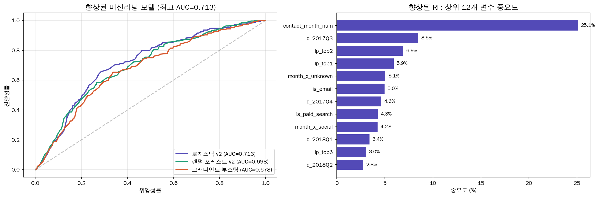
비즈니스 인사이트: 피처를 24개로 확장(랜딩페이지, 분기, 교호작용). 로지스틱 AUC 0.713, RF 0.698, GB 0.678. 기존 0.66 대비 개선. 랜딩페이지 변수 추가가 성능 향상에 기여.
우선순위 액션 매트릭스
🔴 즉시 실행 (낮은 비용)
- Unknown 채널 UTM 추적 정비
- Social 채널 예산 50% 감축
- 15일 골든타임 알림 시스템 도입
🟡 중기 과제 (중간 비용)
- 2017→2018 채널 믹스 변화 원인 조사
- 랜딩페이지별 A/B 테스트
- 30일 골든타임 케어 프로그램 (파트 3 협업)
🟢 예상 효과
Social 감축 + Unknown 증액 시 전환율 +2~3%p 개선 가능.
ML AUC 0.713으로 개선.
15일 이내 fast-track 도입 시 추가 +5%p 기대.
🟣 다른 파트와의 연결
파트 1 (리드 품질) → 채널별 리드 품질 보강
파트 3 (온보딩) → 계약 842명 활성화 분석
파트 6 (전략) → 예산 시뮬레이션 근거 제공